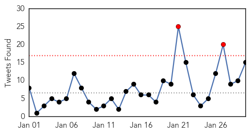

Ebola
30-Day Web Trend
0 alerts, 0 warnings

30-Day Twitter Trend
2 alerts, 0 warnings

Article Locations

Article Confidences

Top Articles:
- 1.000
- Suspected Ebola patient in California tests negative for virus
- 1.000
- New Ebola cases at lowest level in seven months: WHO
- 1.000
- Médecins Sans Frontières (MSF) International
- 1.000
- WHO: Ebola fight 'shifts to ending epidemic'
- 1.000
- “PPP’s key to fighting international epidemics” – Airtel MD
- 1.000
- Ebola Virus Mutated Since Outbreak
- 1.000
- AFAD delivers medical aid to Ebola-affected West Africa
- 1.000
- New Ebola cases lowest in seven months
- 0.999
- Despite Danger, Best US Minds Battle Deadly Virus
- 0.999
- Battle against Ebola enters a new phase
- 0.999
- Ebola response evolves amid slowing cases
- 0.999
- 2 Sacramento Area Patients Test Negative For Ebola
- 0.999
- Ebola at turning point as cases drop to lowest since June
- 0.999
- US Army Turns Its Best Minds Towards Ebola
- 0.999
- #Ebola infections in West Africa going down
- 0.999
- Weekly Ebola cases fall below 100
- 0.998
- Japan helps to fight Ebola
- 0.998
- MSF trims Ebola operation in Liberia, mum on trial drug
- 0.998
- Patient at UC Davis Medical Center being tested for Ebola
- 0.998
- Patient tested for Ebola at Calif.'s UC Davis hospital
- 0.998
- Secretary-General Tells Ebola Round-Table Meeting Outbreak Demonstrates Importance of Robust Health Systems for Interconnected World’s Stability, Safety - Sierra Leone
- 0.998
- Ebola Cases Plummet In West Africa, As Endgame Begins
- 0.996
- What worked in controlling the Ebola outbreak in West Africa
- 0.996
- IFRC Warns Complacency Could Set Back Ebola Progress
- 0.996
- What is the role of Africa?
- 0.996
- Ebola Vaccine Appears Safe, Triggers Immune Response, U.K. Study Finds
- 0.996
- Liberia delays school reopening by two weeks as Ebola cases fall
- 0.996
- Liberia delays school reopening by two weeks as Ebola cases fall
- 0.995
- Verbatim: Lessons from Ebola epidemic
- 0.995
- As Ebola 'fear factor' eases, African tourism edges back
- 0.990
- UC Davis Medical Center has possible Ebola case
- 0.989
- World Bank Group Ebola Response Fact Sheet (30 Jan 2015) - Sierra Leone
- 0.988
- Time to Look Ahead on Ebola
- 0.987
- Sacramento’s Ebola Readiness Does Little to Calm Nerves
- 0.987
- UPDATE 3-Suspected Ebola patient in California tests negative for virus
- 0.980
- Md. man set to be sentenced in fatal stabbing while on PCP
- 0.980
- 2 overnight fires in Maryland leave 2 in critical condition
- 0.980
- Garrett College student from Baltimore accused of stabbing classmates
- 0.980
- Girl, 11, pulled from Joppa fire in critical condition
- 0.980
- Family remembers a woman killed in Parkville
- 0.979
- Possible Ebola patient treated at UC Davis Medical Center
- 0.973
- Liberia Extends School Reopening by Two Weeks as Ebola Slides
- 0.973
- OXFAM GB CEO pays a courtesy call on President Ernest Bai Koroma « Awoko Newspaper
- 0.971
- Ebola Outbreak a New Case Study for Global Disaster Fundraising
- 0.970
- Gloucester Ebola guinea pig not worried about danger
- 0.965
- Second patient hospitalized in California undergoes Ebola testing
- 0.951
- US Surgeon General Makes 'House Call' In Springfield
- 0.946
- LDS Church continues its fight against Ebola
- 0.933
- Ebola Crisis and Humanitarian Response in Iraq - Sierra Leone
- 0.932
- News in the Humanosphere: WHO releases some exceedingly positive Ebola stats
Showing top 50 articles...
Top Tweets:
- 0.924
- All-female Ebola fighting team returns from Africa - WXIA-TV http://t.co/zFIwmEGLxP ebola EVD
- 0.924
- All-female Ebola fighting team returns from Africa - WXIA-TV http://t.co/tMaDOyAG7C ebola EVD
- 0.924
- All-female Ebola fighting team returns from Africa - WXIA-TV http://t.co/k3gERSiLXz ebola EVD
- 0.924
- All-female Ebola fighting team returns from Africa - WXIA-TV http://t.co/TeQGzEBkqP ebola EVD
- 0.924
- All-female Ebola fighting team returns from Africa - WXIA-TV http://t.co/PEwnEqmwOh ebola EVD
- 0.920
- UPDATE: Patient At UC Davis Medical Center Does Not Have Ebola - Huffington Post http://t.co/XIuBC9dibT ebola EVD
- 0.914
- Patient tested for Ebola at Calif.'s UC Davis hospital - USA TODAY http://t.co/IdCLRQTMwD ebola EVD
- 0.893
- Possible Ebola Patient At UC Davis Medical Center In Sacramento - Huffington Post http://t.co/t6astRYkdt ebola EVD
- 0.886
- New map summarizing status and trajectory of Ebola outbreak in West Africa. http://t.co/VsNYncflb2
- 0.875
- RT: Read an update on the Ebola epidemic in West Africa for January 2015. ebola http://t.co/CFUKTXkyjZ http://t.co/Ke2hxve30y
- 0.864
- CDC’s Team 5 Disease Detectives responded to the Ebola outbreak and set records in the process. Read more: http://t.co/dcaKoy8eN9
- 0.855
- The UN Wants Another $1 Billion to Fight Ebola - Bloomberg http://t.co/WETTsiiRkS ebola EVD
- 0.851
- Projected Treatment Capacity Needs in Sierra Leone http://t.co/syuNCh9pWJ ebola
- 0.843
- RT: CDC’s Team 5 Disease Detectives responded to the Ebola outbreak and set records in the process. Read more: http://t.co/d…
- 0.790
- RT: Ebola virus disease *total* cases as of 2015 comapred to end of 2013 http://t.co/PjjTLKzgzX
- 0.785
- 1st treatment centre specializing in care for Ebola infected pregnant women opens in Sierra Leone http://t.co/lASzEw2D4m
- 0.775
- Update on Ebola outbreak in West Africa- January 2015 in: http://t.co/VsNYncflb2
- 0.745
- Ebola Doctor Speaks Out for 1st Time Since Leaving Hospital - NBC New York http://t.co/XMDzTapXog ebola EVD
- 0.742
- CDC’s lab team in Sierra Leone helped in Ebola response as country experienced peak in cases. Listen to podcast: http://t.co/V0JVQD2HyO
- 0.734
- RT: Suspected Ebola patient in California tests negative for virus http://t.co/YbcEvwzoe6
- 0.722
- A Model of the 2014 Ebola Epidemic in West Africa with Contact Tracing http://t.co/ieLcpve6oW
- 0.718
- Today's news on avianflu avianinfluenza Ebola EbolaResponse MERS birdflu http://t.co/eJh2nLA6eJ
- 0.718
- Ebola likely to persist in 2015 as communities resist aid: Red Cross - Reuters http://t.co/eBRMb44074 ebola EVD
- 0.699
- .@WHO says Ebola figures are the most promising since beginning of the outbreak http://t.co/5bhaNdPOlW
- 0.695
- With fewer than 1,000 cases, Ebola outbreak moves into endgame http://t.co/FkGKH9wUiy
- 0.693
- With Just a Few New Cases of Ebola, Liberia's Kids Head Back to School - http://t.co/fA7y2iE4Pd http://t.co/JIdYmXw84Q ebola EVD
- 0.638
- NY doctor who survived Ebola reveals moment of realization - New York Daily News http://t.co/KrsxYm0tRZ ebola EVD
- 0.638
- NY doctor who survived Ebola reveals moment of realization - New York Daily News http://t.co/GbpjR8hJy6 ebola EVD
- 0.613
- Revealed: The team who saved Ebola nurse Pauline Cafferkey at Royal Free ... - Evening Standard http://t.co/ajNhZPOpQ8 ebola EVD
- 0.579
- Cases are waning, but regional preparedness is still key. Could Guinea-Bissau handle Ebola? Our report http://t.co/n4gNGSNhjQ
- 0.574
- Read how Peace Corps made resources available to CDC as they fought the Ebola epidemic at the grassroots level: http://t.co/vtzBgVRfj4
- 0.569
- How Ebola found fertile ground in Sierra Leone’s chaotic capital: http://t.co/QtOrMukOfl via
- 0.553
- Ebola. FMI annonce un financement supplémentaire de USD 160 millions pour les trois pays les plus touchés http://t.co/o95tEJByTi
- 0.542
- RT: Businesses can help fight Ebola w/ employee education, planning & preparedness, and smart policies. Read more: http://t.co/…
- 0.538
- With new Ebola cases reaching record low, @WHO targets ending epidemic http://t.co/SfoeAchB3M
- 0.528
- RT: Suspected Ebola patient admitted to California hospital http://t.co/psstTAUl1g
Unknown
30-Day Web Trend
0 alerts, 0 warnings

30-Day Twitter Trend
3 alerts, 0 warnings

Article Locations

Article Confidences

Top Articles:
- 0.952
- Bird Flu Spreads To 11 States …RSG Confirms Fresh Case
- 0.944
- Indiana flu deaths rise to 108 with latest state report
- 0.942
- Second bird flu case confirmed in Canada
- 0.932
- H5N1 bird flu spreads to 11 states in Nigeria
- 0.929
- Cambridge Memorial Hospital enteric outbreak leaves 7 more infected
- 0.925
- Second bird flu case confirmed in Canada
- 0.917
- Chicago Tribune
- 0.917
- Chicago Tribune
- 0.917
- Chicago Tribune
- 0.917
- Chicago Tribune
- 0.917
- Chicago Tribune
- 0.917
- Chicago Tribune
- 0.917
- Chicago Tribune
- 0.917
- Chicago Tribune
- 0.917
- Chicago Tribune
- 0.917
- Chicago Tribune
- 0.915
- Eight At Charlotte School Test Positive For Tuberculosis, Officials Say
- 0.910
- The world windows to Thailand
- 0.891
- Charlotte News
- 0.853
- 9 flu-related deaths reported in NC last week
- 0.823
- Vermont Health Department Finds Positive Results For TB
- 0.821
- Treating Sinus Infections Without Antibiotics
- 0.819
- Second Case of Bird Flu in Canada Confirmed
- 0.793
- No. of flu patients tops 2 million for 3rd week in a row ‹ Japan Today
- 0.789
- New TB Cases Confirmed in Charlotte - Story
- 0.774
- Beechwood rehab center not accepting new patients due to confirmed flu case
- 0.765
- Yemen: WHO deplores attacks on health workers and health facilities in Afghanistan, Sudan and Yemen
- 0.762
- WHO deplores attacks on health workers and health facilities in Afghanistan, Sudan and Yemen - Yemen
- 0.757
- White House urges parents to heed advice urging childhood vaccines
- 0.756
- Cervical Cancer Awareness Month - Story
- 0.741
- Vigilance called for amid global rubella surge: CDC
- 0.711
- Forecasting the Flu Better
- 0.707
- Djokovic survives 5-set thriller to set up Murray final
- 0.705
- US police confront Google over ‘cop-tracking’ app
- 0.705
- Greece warned against trying to reverse bailout deals
- 0.703
- Romney rules out run in 2016 presidential election
- 0.703
- Deadly explosion strikes Shiite mosque in Pakistan
- 0.693
- Daughter of L’Oréal heiress says artist plotted to ‘destroy’ family
- 0.691
- A Haitian Youth Orchestra: Is It a Dream?
- 0.685
- IS group crisis increases headaches for Jordan’s crown
- 0.679
- African Union backs 7,500-strong force to fight Boko Haram
- 0.615
- Zimbabwe's president Robert Mugabe, 90, becomes African Union chairman
- 0.608
- Mugabe Appointed AU Chairman As African Leaders Rebuff Warnings From Zimbabwe
- 0.604
- Gonorrhea epidemic reported in Sacramento Valley county
- 0.604
- Comité économique et social européen
- 0.587
- H7N9 bird flu case confirmed in 2nd B.C. patient
- 0.581
- Function, Location & Problems
- 0.574
- Zimbabwe's president Robert Mugabe, 90, becomes African Union chairman
- 0.568
- Norway confirms first instance of mad cow disease
- 0.539
- NYC Health Department urges flu medication use
Showing top 50 articles...
Top Tweets:
- 0.511
- RT: @Cuadrado jugará en Chelsea (@DitoLemos), periodista de la BBC confirmó la noticia al programa Momento Depor. de Antena…